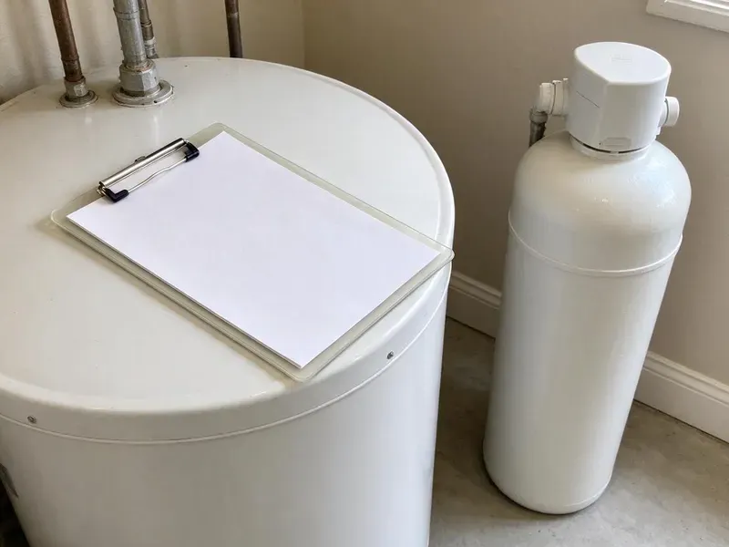

Walls Waterproofing in Muskegon, MI
At CHV Plumbing, we provide effective walls waterproofing solutions for homeowners across Muskegon, MI to keep your foundation dry.
- Durable Waterproofing Systems
- Free Estimates
- Licensed & Insured
- Fast Moisture Source Diagnosis

Stop Water Damage with Foundation Waterproofing in Muskegon, MI.
Call today and we will trace the moisture with meters and thermal imaging before recommending any waterproofing.
Your Expert for Walls Waterproofing in Muskegon, MI
At CHV Plumbing, we provide complete walls waterproofing services designed to safeguard your home's structure. From exterior foundation coatings to interior drainage systems, we address all potential points of water entry to keep your Muskegon property dry.
Our expertise includes:
- Interior and exterior wall sealing
- Drainage system installation
- Exterior block and stem wall sealing against irrigation runoff

Additional Plumbing Maintenance Services in Muskegon, MI
Our maintenance and specialty plumbing services in Muskegon, MI protect your home year-round and extend the life of every system.


Customers
Why Choose CHV Plumbing for Walls Waterproofing in Muskegon, MI?
Waterproofing a wall without fixing the leak behind it only hides the problem. As plumbers, we find and fix the source before sealing anything.
- Source First, We fix the plumbing or drainage issue before applying any waterproofing.
- Local Knowledge, We understand the challenges Michigan homes face, including soil movement and heavy rain events.
- Home Protection, Walls waterproofing prevents structural damage and mold growth and protects your property's value and indoor air quality.
Citywide Coverage
CHV Plumbing serves every neighborhood of Muskegon, so homeowners across the area have access to top-quality walls waterproofing services. Whether you are in an older district or a newer subdivision, our team is ready to respond.
Experienced Team
The CHV Plumbing team has extensive experience tackling the waterproofing challenges Muskegon, MI homes face. From minor cracks to major foundation leaks, our experts have the knowledge to deliver lasting solutions.
Safety-First Approach
Safety is a priority in all our walls waterproofing projects. We follow all local building codes and safety regulations in Muskegon, MI, for a secure work environment and a compliant, effective installation.
Trusted Certified Muskegon Plumbing Services Professionals
At CHV Plumbing, we take pride in providing certified plumbing services throughout Muskegon, MI. Backed by leading industry credentials, our experienced plumbers combine technical skill with genuine customer care. Whether it is repair, installation, or maintenance, we follow strict safety and quality standards to deliver lasting results you can trust.
Call Us Now PHCC Plumbing Contractor Recognition
PHCC Plumbing Contractor Recognition Better Business Bureau (BBB) Accreditation
Better Business Bureau (BBB) Accreditation Angi Certified Pro
Angi Certified Pro ISO 9001 Quality Management Certification
ISO 9001 Quality Management CertificationReliable Walls Waterproofing Services in Muskegon, MI
Commercial Walls Waterproofing in Muskegon
Beyond residential properties, CHV Plumbing also offers walls waterproofing services for commercial buildings in Muskegon. Protecting commercial basements, equipment rooms, and underground parking garages from water damage is vital to business operations. We understand the need for minimal disruption and timely project completion for commercial clients. Our team works with property managers and business owners to implement robust waterproofing solutions that fit the demands of commercial structures and their code requirements.

Cost-Effective Waterproofing Solutions in Muskegon, MI
We believe in providing honest and cost-effective walls waterproofing solutions without cutting corners on quality. Our team will conduct a thorough assessment of your property in Muskegon to recommend the most sensible and economical waterproofing strategy. From detailed estimates to explaining the long-term savings of preventing water damage, we make sure you understand your investment. We use durable materials and proven techniques to provide lasting protection, reducing the chance of future repairs. Our goal is to deliver value and peace of mind.
Exterior Block Wall Waterproofing in Muskegon, MI
Block and stem walls often show efflorescence, which is the white mineral crust left when water passes through masonry. Irrigation and sprinklers aimed at the house are common culprits. We adjust or reroute irrigation, clean the wall and apply a breathable masonry sealer or elastomeric coating. Proper grading and drip line placement help keep the wall dry for good.
Foundation Crack Repair & Sealing in Muskegon
Even minor cracks in foundation walls can allow significant water intrusion. Our services include crack repair using epoxy or polyurethane injection to seal these entry points permanently. This method fills the entire depth of the crack, restoring strength and preventing water penetration. We address both vertical and horizontal cracks, knowing that horizontal cracks can indicate structural issues that need a thorough assessment before sealing. Addressing these early prevents further water damage and expensive future repairs.
Crawl Space Encapsulation in Muskegon
Crawl space encapsulation involves sealing the crawl space entirely with heavy-duty vapor barriers and often includes a dehumidifier. This not only waterproofs the walls but also controls humidity, stopping mold growth and wood rot in the crawl space. Humid summers bring condensation on cold pipes and damp basements, which can mask slow leaks. An encapsulated crawl space can noticeably improve indoor air quality and energy efficiency by keeping moisture from moving up into the home. We use durable, reinforced poly sheeting for walls and floors, sealed at all seams and penetrations.
Waterproofing for Older Homes in Muskegon, MI
Older homes, especially those built before modern waterproofing standards, are especially prone to water intrusion. Older neighborhoods may also have lead service lines, which the state is requiring utilities to replace over time. Many older foundations may lack adequate exterior drainage or proper sealing. We specialize in assessing and upgrading waterproofing systems for these properties, often combining exterior excavation with interior drainage solutions. We respect the existing structure while installing modern, effective waterproofing, with attention to the challenges of older brick and stone foundations.
Waterproofing Costs vs. Repeat Water Damage in Muskegon, MI
Waterproofing a shower or wall costs far less than repeated drywall, cabinet and flooring repairs. Ignoring moisture also invites mold, which can be expensive to remediate. A typical shower wall waterproofing project falls in the low thousands, while exterior block sealing varies with wall size. We give you a written quote so you can compare options clearly.

Shower Pan Leak Repair and Waterproofing in Muskegon, MI
A cracked or poorly sloped shower pan often causes wet baseboards and stained ceilings below. We test the pan by plugging the drain and flooding it to confirm the leak. Then we rebuild the pan with correct pre-slope, a new liner or bonded membrane and a properly clamped drain. A second flood test confirms the pan is watertight before tile.
Expert Walls Waterproofing Near Me in Muskegon, MI
When searching for 'walls waterproofing near me' in Muskegon, MI, CHV Plumbing is your local, dependable choice. We pride ourselves on fast response times and thorough service, understanding the urgency when water threatens your home's foundation. Our team is always ready to bring expert solutions right to your doorstep.
When you need fast and effective walls waterproofing solutions, don't hesitate to call CHV Plumbing. We pride ourselves on timely service and lasting results, keeping your Muskegon home dry and protected. Reach out today for a consultation.
CHV Plumbing at a Glance
- Fully licensed plumbing team covering Muskegon, MI
- Same-day appointments and 24/7 emergency response
- Clear written estimates, no hidden fees
- 4.9-star rated by 670+ Michigan customers
Muskegon Map
Muskegon Information
- Population
- 37,183
- Area codes
- 231/616/614
- Service area
- Muskegon and communities within 40 miles
- Nearby
- Holland, Grand Rapids, Wyoming, Kentwood
Effective walls waterproofing is important for homes in Muskegon, MI because shifting soil, heavy rains and dry spells can all put stress on foundation walls.
Expert Services
Trust our professionals for reliable CHV Plumbing solutions in Muskegon, MI.
Our Specialized Plumbing Services in Muskegon, MI
At CHV Plumbing, we provide a complete range of plumbing services across Muskegon, MI. From leak detection to full system installations, our team ensures fast, precise, and affordable service for both residential and commercial properties. Explore our core services below:


How Our Walls Waterproofing Service Works in Muskegon, MI
We follow a clear, step-by-step approach so every part of your walls waterproofing is handled correctly.
Request a Quote
Contact us at (810) 380-5918 to schedule a detailed inspection of your property. Our experts will assess your foundation, identify water entry points, and discuss your particular needs.
Thorough Inspection
We conduct a complete evaluation of your foundation walls, checking for cracks, signs of hydrostatic pressure, and existing drainage issues. This helps us design the most effective waterproofing plan.
Customized Solution
Based on our findings, we propose a custom waterproofing strategy, which may include exterior coatings, interior drainage, or crack repair. We use proven methods and quality materials.
Frequently Asked Questions About Walls Waterproofing in Muskegon
The cost of walls waterproofing in Muskegon, MI can vary significantly based on the method used, the extent of the damage, and the size of your foundation. Basic crack sealing might range from $300 to $800 per crack, while a full exterior foundation waterproofing project could be $8,000 to $20,000 or more. Interior drainage systems with a sump pump typically fall between $4,000 and $12,000. We provide clear, itemized quotes after a thorough inspection.
Skilled DIYers can roll on liquid membranes, but mistakes at seams, corners and drains often lead to leaks. Shower pans also require correct slope and flood testing. Professional installation lowers the risk of hidden water damage.
Interior waterproofing addresses water after it has entered the foundation, typically managing it with sealants and drainage systems inside the basement or crawl space. Exterior waterproofing prevents water from reaching the foundation walls in the first place, usually by excavating and applying membranes or coatings to the outside of the foundation.
A shower wall waterproofing project usually takes two to four days, including drying time between coats. Exterior block sealing can often be completed in a day. Larger foundation jobs may take a few days.
Look for signs such as damp or wet spots on basement or crawl space walls, a musty odor, visible mold or mildew growth, efflorescence, a white powdery residue, on concrete or brick, and standing water. Cracks in foundation walls or bowing walls also point to potential water entry issues. If you notice any of these, it's wise to get a professional assessment.
Walls waterproofing is generally not recommended as a DIY project due to its complexity and the critical importance of a sound foundation. It often involves heavy excavation, specialized equipment, precise material application, and knowledge of drainage principles and local building codes. Improper waterproofing can lead to more severe and costly damage down the line, so professional help is the smart choice.
Yes. Our workmanship is warrantied, and many membrane systems carry their own manufacturer warranty when installed correctly. We explain the coverage in your written estimate.
We commonly install Schluter Kerdi, Custom RedGard, Laticrete Hydro Ban and similar systems. The right choice depends on your shower design and tile. We follow each manufacturer's installation steps to keep the warranty in force.
What People Are Saying About Our Plumbing Experts?

Sofia M.
Two new toilets installed in one visit, no mess left behind, and the tech even adjusted a faucet he noticed was dripping. Fair pricing and really friendly.
Toilet Installation · Kentwood, MILaura S.
I scheduled a water heater replacement, and the team made the process smooth and affordable. The new unit works perfectly, and they cleaned up after completing the job.
Water Heater Replacement · Portage, MI
James P.
Our commercial plumbing system had a leak under the sink, and CHV Plumbing handled it professionally. The plumbers arrived quickly and restored everything without disruption to our customers.
Commercial Plumbing · Kentwood, MI
Daniel K.
A pipe burst at 11 pm and they actually answered. The plumber showed up within the hour, shut everything down, and had us back to normal the next morning. Could not ask for more.
Emergency Plumbing · Muskegon, MI
Patricia H.
We had a slab leak that two other companies could not find. CHV Plumbing located it in under an hour, explained our options, and the price matched the quote to the dollar.
Slab Leak Repair · Grand Rapids, MIRobert G.
The trenchless sewer replacement saved our front yard. They walked us through the camera inspection footage first so we knew exactly what we were paying for.
Sewer Line Replacement · Grand Rapids, MI